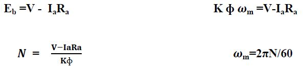
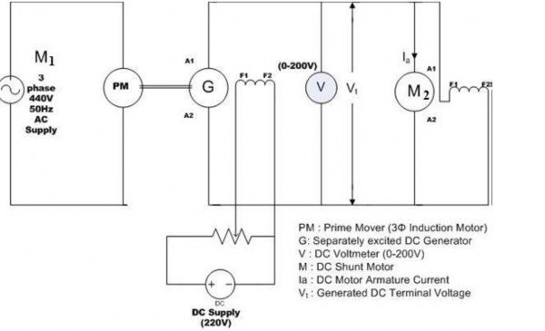
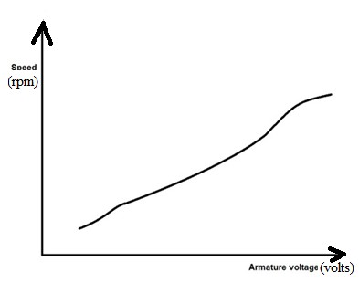

Computer Science & Engineering Computer Graphics
List Of Experiments
Points & Co-ordinate Systems
Introduction
Speed control of D.C. motor can be obtained by varying the applied voltage to the armature. Ward- Leonard system of speed control is based on this principle. In this method M is the main D.C. motor whose speed is to be controlled, and G is a separately excited D.C. generator. The generator G is driven by a 3-phase induction motor. The combination of ac driving motor and the dc generator is called the motor-generator set.
Speed control by varying armature resistance
The speed of a D.C. motor is proportional directly to the back e.m.f and inversely to the net flux per pole Ф ,i.e

If brush contact drop is neglected
Where N = Speed in rpm
V = voltage applied across armature circuits
Ra = armature resistance, this includes the series field and interpole winding resistance if in circuit.
Ia = armature current,
K = a constant
Thus, the speed of a D.C motor may be varied by either of the following adjustments:
1. Changing the flux per pole Ф, by varying the field current,
2. Changing external resistance in the armature circuit,
3. Changing the applied voltage V.( Ward-Leonard speed control method )
Ward-Leonard System:
This system is used where an unusually wide and very sensitive speed control is required as for colliery winders, electric excavators, elevators and the main drives in steel mills and blooming and paper mills. M1 is the main motor whose speed control is required. The field of this motor is permanently connected across the dc supply lines. A dc or an ac motor M2 directly coupled to generator G. The motor M2 runs at an approximately
constant speed. The output voltage of G is directly fed to the main motor M1.
In this method the variable voltage to be applied to the motor armature is obtained from an additional separately excited d.c generator, and the motor under control is also run as a separately excited motor. The above equation shows that if the motor excitation is constant and the applied voltage V is varied the speed will be almost directly proportional to the armature voltage.
The system can be more adopted for forward as well as reverse operation of the motor by changing the polarity of the voltage applied to its armature. This can be achieved by reversing the direction of the field current of the separately excited variable voltage generator.
The variable voltage generator in Ward Leonard system is driven by a constant speed 3- phase induction motor.
If the constant voltage d.c power for excitation is not available otherwise, the same may be obtained from a constant voltage exciter coupled with the auxiliary motor generator set. The direction of the field current of the variable voltage generator may be reversed by any one of the following two methods
1. By providing a reversing switch in the field circuit
2. By connecting two potentiometer rheostats across generator field across the movable terminals.
Circuit Diagram

Graph

Here torque is directly proportional to armature voltage.
Advantages of using Ward-Leonard method
1. A very large range of speed variation is possible.
2. The direction of rotation may be easily reversed by reversing the generator field current.
3. The control is affected through the generator field circuit, which is current circuit.
4. The speed regulation is good.
5. Overall-efficiency, is though poor, is still much higher than that obtained in armature voltage control using series resistance.
Drawbacks of Ward-leonard method
1. Higher initial cost due to use of two additional machines of the same rating as the main dc motor.
2. Larger size and weight.
3. Requires more floor area and costly foundation.
4. Frequent maintenance is needed.
5. Lower efficiency due to higher losses.
6. The drive produces more noise.